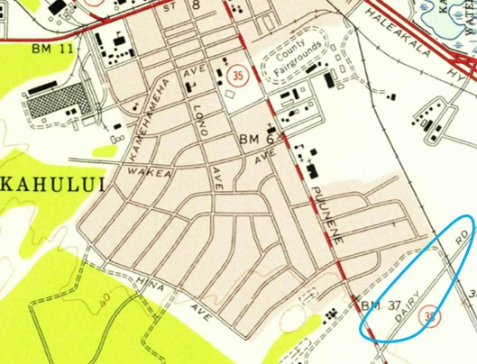

Dairy Road
Place: Dairy Road, Kahului, Maui
Type: Highway / former plantation road / commercial corridor
Namesake: Puʻunēnē Dairy, formerly operated by Hawaiian Commercial & Sugar Company
Story it tells: How a plantation road serving a dairy, sugar operations, and worker communities evolved into one of Central Maui's busiest highways while the agricultural landscape that gave Dairy Road its name disappeared around it.

Dairy Road was one of the busiest streets in Kahului, carrying traffic between Kahului Airport, Hāna Highway, and the major routes leading toward South and West Maui. Today, the road is lined with shopping centers, restaurants, warehouses, car dealerships, and other commercial development. Nothing about the modern layout explains its name. Dairy Road looked very different and in the past it led through plantation lands to an actual dairy.
The name comes from Puʻunēnē Dairy, which was owned by and served Hawaiian Commercial & Sugar Company (HC&S), the enormous sugar plantation that dominated much of Central Maui during the twentieth century. HC&S operated its mill at nearby Puʻunēnē and controlled tens of thousands of acres across the central isthmus. Sugar was the company's principal business, but a plantation of that scale functioned almost like its own community, with housing, stores, transportation systems, and agricultural operations supporting thousands of workers and their families.
Puʻunēnē Dairy supplied milk and other products while pastures occupied areas that would later become some of Kahului's busiest commercial districts. A residential community known as Puʻunēnē Dairy Camp also developed around the operation, housing workers and their families near the dairy. Beyond the compact town were broad expanses of cane fields, pastures, dirt roads, irrigation systems, and plantation facilities stretching toward Puʻunēnē and far beyond.
Dairy Road developed within this landscape as a plantation route serving the dairy and connecting agricultural operations with the larger HC&S transportation network. It was one of numerous utilitarian roads crossing company lands, used to move workers, livestock, equipment, and agricultural products between the fields, camps, dairy, mill, and neighboring communities.
The road's importance changed dramatically after World War II. During the war, the United States Navy had constructed Naval Air Station Kahului near the northern end of the Central Maui isthmus. After the war, commercial operations shifted to the former naval airfield in 1952, creating the modern Kahului Airport and placing an increasingly important transportation hub within the plantation vicinity.
A 1955 map of Kahului already shows Dairy Road extending through the area between the airport and the plantation lands toward Puʻunēnē. The dairy itself was already disappearing. HC&S sold the Puʻunēnē Dairy operation to Haleakalā Dairy in 1951, ending the sugar company's direct involvement in the business.
Haleakalā Dairy was a familiar Maui name in its own right and later associated with the development and popularization of POG, the passion-orange-guava drink that became a Hawaiʻi favorite. The old Puʻunēnē Dairy site, however, did not survive as a recognizable historic complex and the structures that lined Dairy Road were torn down shortly after its acquisition.
The surrounding plantation community disappeared as well. As HC&S consolidated its operations and Maui's economy changed, plantation camps were gradually closed and their residents relocated. Families who had once lived in communities such as Dairy Camp moved into newly developing residential neighborhoods, including the planned subdivisions of Kahului. Buildings were removed, agricultural facilities disappeared, and land that had supported workers, cattle, and crops began assuming entirely new uses.
Meanwhile, the success of Kahului Airport created a transportation problem. Maui's postwar population was growing, automobile ownership was increasing, and more visitors were arriving by air every year. The old network of plantation roads had never been designed to handle the volume of cars traveling between the airport and surrounding communities. Dairy Road occupied an increasingly valuable corridor connecting the airport area with the highways leading across Central Maui.
In 1971, the State of Hawaiʻi acquired an easement over the privately owned plantation road as part of the process of upgrading the transportation network into a public highway. Dairy Road was paved, widened, and modernized as the surrounding transportation network expanded. By the early 1980s, the modern four-lane corridor appeared on maps as part of Hawaiʻi Route 380.
The transformation of Dairy Road occurred alongside the transformation of Kahului itself. Former agricultural and plantation lands became increasingly valuable for commercial and industrial development. Warehouses, stores, restaurants, offices, and shopping centers replaced the open landscape that had once surrounded the road. What began as a route through HC&S property gradually became one of Maui's principal commercial corridors and an important gateway for travelers leaving Kahului Airport.
The modern road serves a transportation system and economy almost completely different from the plantation network that created it. Very little remains along Dairy Road to explain why it carries that name. The dairy is gone. Its worker community is gone. The surrounding pastures and much of the agricultural landscape have been replaced by commercial development.
The name is the sole survivor of that era. Dairy Road is therefore a small piece of historical memory embedded in modern Maui's street map. A name that now sounds almost generic preserves the story of Puʻunēnē Dairy, HC&S, plantation communities, the rise of Kahului Airport, and the transformation of Central Maui from an agriculturian community to one based on commercial development and transportation.